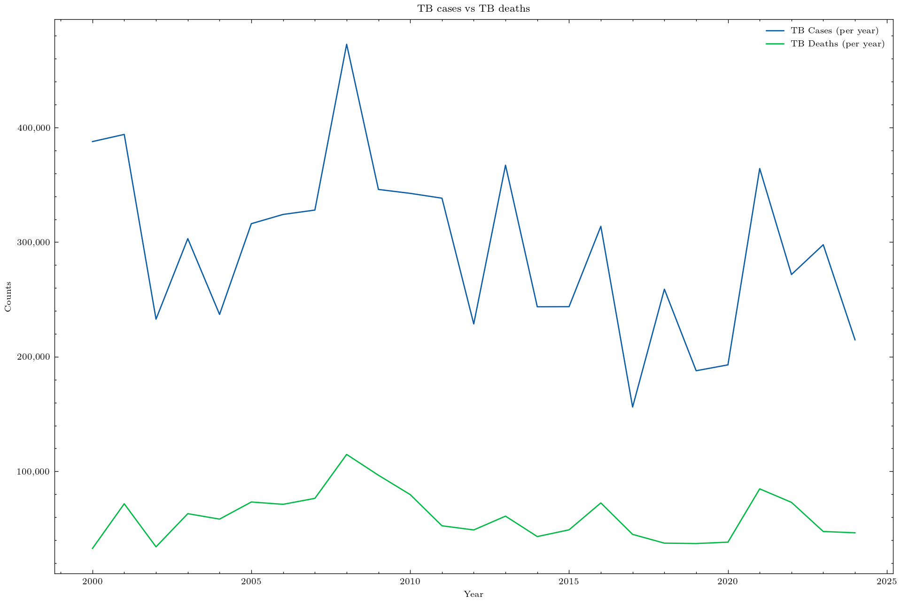
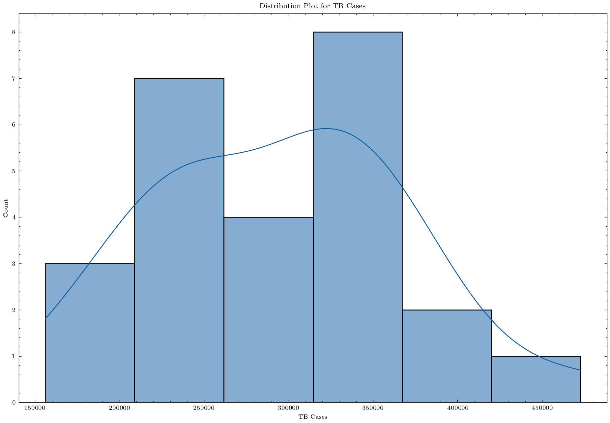
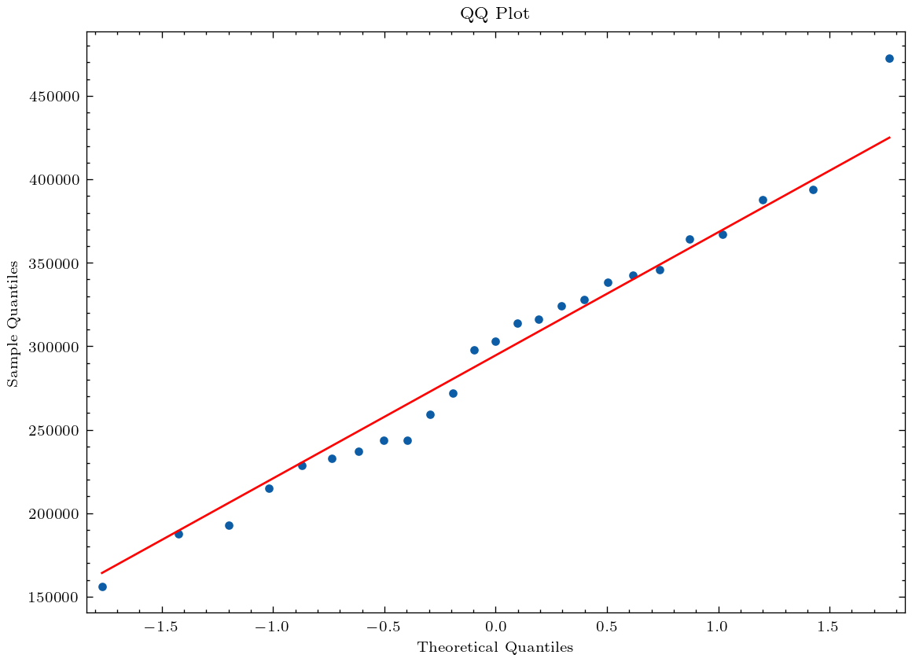
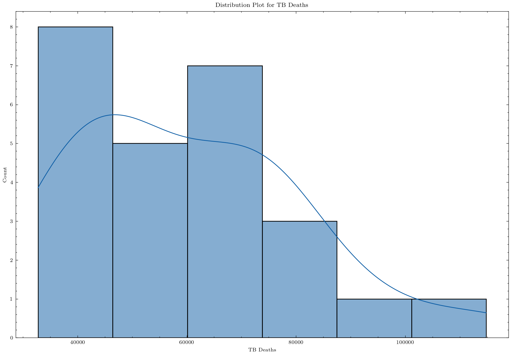
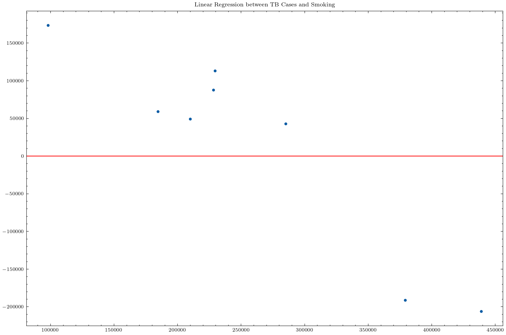
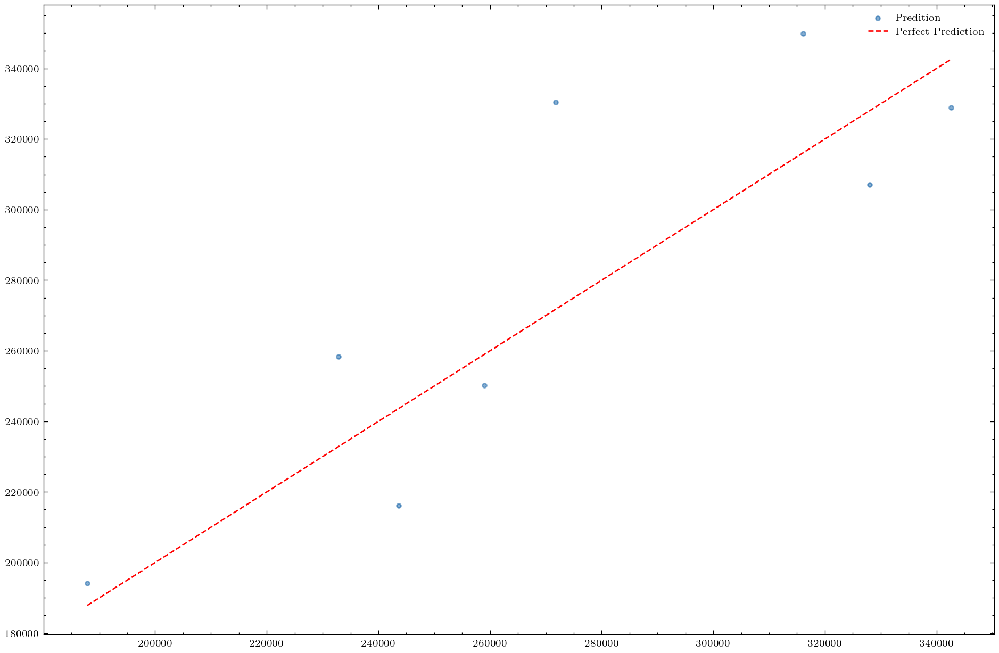

Using virtual environment '/Users/devonallies/.virtualenvs/r-reticulate' ...TB Trends: Global & Regional Insights
List Of Acronyms
- LTBI
- latent Tuberculosis infection
- MSE
- Mean Squared Error
- MTB
- Mycobacterium tuberculosis
- TB
- Tuberculosis
- WHO
- World Health Organisation
Packages | Modules | Environments:
Import Data:
[1] "Country" "Region"
[3] "Income_Level" "Year"
[5] "TB_Cases" "TB_Deaths"
[7] "TB_Incidence_Rate" "TB_Mortality_Rate"
[9] "TB_Treatment_Success_Rate" "Drug_Resistant_TB_Cases"
[11] "HIV_CoInfected_TB_Cases" "Population"
[13] "GDP_Per_Capita" "Health_Expenditure_Per_Capita"
[15] "Urban_Population_Percentage" "Malnutrition_Prevalence"
[17] "Smoking_Prevalence" "TB_Doctors_Per_100K"
[19] "TB_Hospitals_Per_Million" "Access_To_Health_Services"
[21] "BCG_Vaccination_Coverage" "HIV_Testing_Coverage" Introduction:
This analysis project uses the Tuberculosis (TB) Trends dataset from Kaggle (Kyad, Otto & Fong, 2013). A link has be provided to the data under Other Links.
TB is a respirator disease caused by Mycobacterium tuberculosis (MTB). It is spread through the air via droplets when individuals who are infected with MTB cough, sneeze, or spit. According to the World Health Organisation (WHO), TB caused 1.25 million deaths in 2023, and it is estimated that 25% of the global population is infected with MTB (Li, Yang, Zhuang, Ye, Zhao & Gong, 2023).
Figure 1 indicates the amount of TB cases and deaths since 2000 up until 2024.
Exploratory Data Analysis:
Data types per column:
Table 1 provides a summary of the tbTrends dataframe. It outputs information about each column, including column name and the type assigned to each of the columns. This helps us in understanding the nature of our data.
column dtype
0 Country object
1 Region object
2 Income_Level object
3 Year float64
4 TB_Cases float64
5 TB_Deaths float64
6 TB_Incidence_Rate float64
7 TB_Mortality_Rate float64
8 TB_Treatment_Success_Rate float64
9 Drug_Resistant_TB_Cases float64
10 HIV_CoInfected_TB_Cases float64
11 Population float64
12 GDP_Per_Capita float64
13 Health_Expenditure_Per_Capita float64
14 Urban_Population_Percentage float64
15 Malnutrition_Prevalence float64
16 Smoking_Prevalence float64
17 TB_Doctors_Per_100K float64
18 TB_Hospitals_Per_Million float64
19 Access_To_Health_Services float64
20 BCG_Vaccination_Coverage float64
21 HIV_Testing_Coverage float64Missing values:
Table 2 calculates and displays the number of missing values present in each column within our {tbTrends} dateframe. This information helps us decide in appropriate cleaning steps.
column missing_values
0 Country 0
1 Region 0
2 Income_Level 0
3 Year 0
4 TB_Cases 0
5 TB_Deaths 0
6 TB_Incidence_Rate 0
7 TB_Mortality_Rate 0
8 TB_Treatment_Success_Rate 0
9 Drug_Resistant_TB_Cases 0
10 HIV_CoInfected_TB_Cases 0
11 Population 0
12 GDP_Per_Capita 0
13 Health_Expenditure_Per_Capita 0
14 Urban_Population_Percentage 0
15 Malnutrition_Prevalence 0
16 Smoking_Prevalence 0
17 TB_Doctors_Per_100K 0
18 TB_Hospitals_Per_Million 0
19 Access_To_Health_Services 0
20 BCG_Vaccination_Coverage 0
21 HIV_Testing_Coverage 0Data focused on South Africa:
Cleaned data:
Table 3 shows the effects made to clean the data for further analysis. Several operations have been performed on tbTrends, and a new dataframe, clean was created. The operations included dropping the following columns:
RegionCountryIncome_level
These are not needed for further analysis within this analysis. The data is grouped by Year and we calculate the sum of the values for each year. We reset_index to convert the output back a dataframe.
TB Stats in South Africa:
Year TB_Cases ... BCG_Vaccination_Coverage HIV_Testing_Coverage
0 2000.0 387768.0 ... 740.53 610.10
1 2001.0 394014.0 ... 1346.17 847.05
2 2002.0 232815.0 ... 614.23 439.58
3 2003.0 303088.0 ... 838.67 520.79
4 2004.0 236955.0 ... 756.55 607.94
[5 rows x 19 columns]Figure 1 is a lineplot that visualises the trend of TB cases and deaths in ‘South Africa’ over several years.


QQ Plot:
QQ Plot that is used to check whether our data follows a normal distribution.
Why does the QQ Plot show. On the x-axis, it shows what the theoretical quantiles should be and the y-axis shows our data.



As we can see from Figure 5, and the Mean Squared Error (MSE), a value of 1.7e+10 the measurement of how far the model’s prediction are from the actual values, is very high. This indicates that the model performed poorly. This model, Linear Regression, failed to capture the patterns in the data.
RandomForestRegressor()In a Jupyter environment, please rerun this cell to show the HTML representation or trust the notebook.
On GitHub, the HTML representation is unable to render, please try loading this page with nbviewer.org.
RandomForestRegressor()

As we can see, the MSE for the Random Forest Model is 8.4e+08. This is out performs the Linear Regression model that was used earlier.
Future Work:
Looking at different Feature
Xcompared to the TargetyLooking at different regions and some comparisons.
Bibliography:
Kyad, K., Otto, M. & Fong, A. 2013.
Li, L.-S., Yang, L., Zhuang, L., Ye, Z.-Y., Zhao, W.-G. & Gong, W.-P. 2023. From immunology to artificial intelligence: Revolutionizing latent tuberculosis infection diagnosis with machine learning. Military Medical Research. 10(1):58. DOI: 10.1186/s40779-023-00490-8.